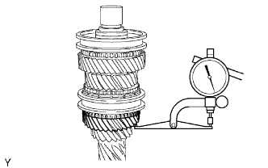
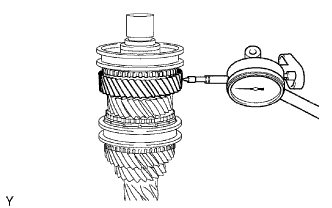
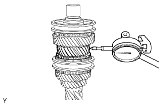
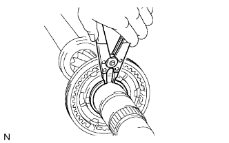
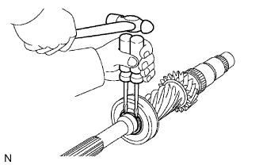

ПЕРВИЧНЫЙ ВАЛ > РАЗБОРКА |
| 1. INSPECT 6TH GEAR THRUST CLEARANCE |
 |
Using a dial indicator, measure the 6th gear thrust clearance.
| 2. INSPECT 3RD GEAR THRUST CLEARANCE |
 |
Using a feeler gauge, measure the 3rd gear thrust clearance.
| 3. INSPECT 4TH GEAR THRUST CLEARANCE |
|  |
Using a dial indicator, measure the 4th gear thrust clearance.
| 4. INSPECT 6TH GEAR RADIAL CLEARANCE |
|  |
Using a dial indicator, measure the 6th gear radial clearance.
| 5. INSPECT 3RD GEAR RADIAL CLEARANCE |
|  |
Using a dial indicator, measure the 3rd gear radial clearance.
| 6. INSPECT 4TH GEAR RADIAL CLEARANCE |
 |
Using a dial indicator, measure the 4th gear radial clearance.
| 7. REMOVE NO. 3 TRANSMISSION CLUTCH HUB SHAFT SNAP RING |
Using 2 screwdrivers and a hammer, tap off the snap ring.
| 8. REMOVE 6TH GEAR SUB-ASSEMBLY |
Using SST and a press, remove the No. 3 transmission clutch hub, hub sleeve, synchronizer ring and 6th gear from the input shaft.
| 9. REMOVE 6TH GEAR NEEDLE ROLLER BEARING |
Remove the 6th gear needle roller bearing from the input shaft.
| 10. REMOVE SPACER |
Remove the spacer from the input shaft.
| 11. REMOVE GEAR THRUST WASHER SHAFT SNAP RING |
 |
Using a snap ring expander, remove the snap ring from the input shaft.
| 12. REMOVE 3RD GEAR THRUST WASHER |
Remove the 3rd gear thrust washer from the input shaft.
| 13. REMOVE 3RD GEAR |
Remove the 3rd gear from the input shaft.
| 14. REMOVE STRAIGHT PIN |
Remove the straight pin from the input shaft.
| 15. REMOVE 3RD GEAR NEEDLE ROLLER BEARING |
Remove the 3rd gear needle roller bearing from the input shaft.
| 16. REMOVE SPACER |
Remove the spacer from the input shaft.
| 17. REMOVE NO. 2 SYNCHRONIZER RING SET |
 |
Remove the No. 2 synchronizer ring set from the input shaft.
| 18. REMOVE NO. 2 CLUTCH HUB SETTING SHAFT SNAP RING |
|  |
Using a snap ring expander, remove the snap ring from the input shaft.
| 19. REMOVE 4TH GEAR |
Using SST and a press, remove the No. 2 transmission clutch hub, hub sleeve, synchronizer ring and 4th gear from the input shaft.
| 20. REMOVE 4TH GEAR NEEDLE ROLLER BEARING |
Remove the 4th gear needle roller bearing from the input shaft.
| 21. REMOVE INPUT SHAFT FRONT BEARING SNAP RING |
|  |
Using 2 screwdrivers and a hammer, tap off the snap ring.
| 22. REMOVE INPUT SHAFT FRONT BEARING |
Using SST and a press, remove the input shaft front bearing from the input shaft.
| 23. REMOVE NO. 2 TRANSMISSION CLUTCH HUB |
Remove the clutch hub, 3 synchromesh shifting keys, 3 balls and 3 springs from the hub sleeve.
| *1 | Spring |
| *2 | Ball |
| *3 | Synchronizer Shifting Key |
| 24. REMOVE NO. 3 TRANSMISSION CLUTCH HUB |